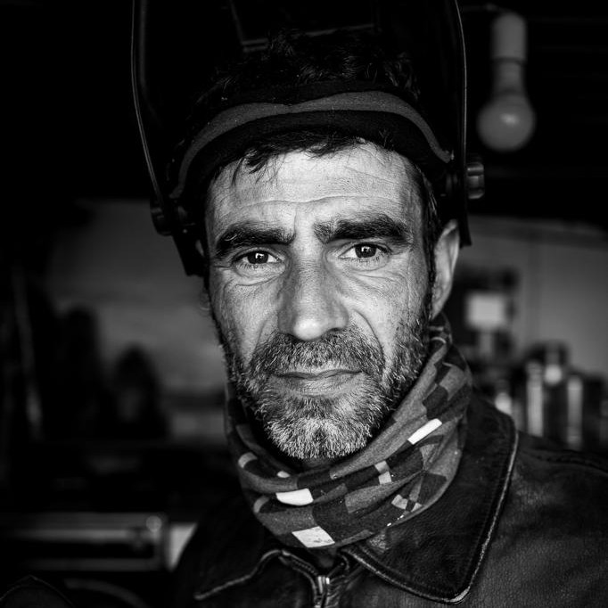

Cabras de raza palmera
Gustavo Díaz · Herrumbre Vivo · Puntallana
En el corazón del Mercadillo del Agricultor de Puntallana, estas cabras metálicas no solo captan la atención: cuentan una historia.
Confeccionadas a partir de herramientas olvidadas y materiales reciclados, las cabras de Herrumbre Vivo rinden homenaje a la tradición ganadera del municipio, recordando el vínculo ancestral entre el pastoreo, la producción de queso y la vida rural.
Ubicadas en un espacio donde agricultores, artesanos y vecinos se reúnen cada semana, estas esculturas nos invitan a reflexionar sobre cómo la mecanización transformó el campo, dejando atrás los útiles de siempre, pero no su memoria.
Aquí, el arte recupera lo que parecía inservible y lo convierte en símbolo: una celebración de las raíces de Puntallana y del valor de mirar al pasado con respeto para construir un futuro más consciente y sostenible.
Mercadillo del Agricultor de Puntallana, La Palma
Abrir en Google Maps
Natural de Fuencaliente, Gustavo Díaz crea bajo la marca Herrumbre Vivo proyectos que combinan arte, sostenibilidad, identidad cultural y participación ciudadana. Transforma materiales en desuso en esculturas e instalaciones que ponen en valor las tradiciones y el patrimonio de Canarias.
Es el creador e impulsor de CaminArte, un innovador proyecto de geolocalización cultural e itinerarios artísticos sostenibles que fusiona la memoria histórica, el paisaje palmero y el arte del metal reciclado en favor del medio ambiente.
In the heart of Puntallana Farmers' Market, these metal goats do more than catch the eye: they tell a story.
Made from forgotten tools and recycled materials, Herrumbre Vivo's goats pay tribute to the municipality's livestock tradition, recalling the ancestral link between herding, cheese production and rural life.
Set in a place where farmers, craftspeople and local residents meet every week, these sculptures invite us to reflect on how mechanisation transformed the countryside, leaving traditional tools behind, but not their memory.
Here, art recovers what seemed useless and turns it into a symbol: a celebration of Puntallana's roots and of the value of looking to the past with respect in order to build a more conscious and sustainable future.
Puntallana Farmers' Market, La Palma
Open in Google MapsA native of Fuencaliente, Gustavo Díaz creates projects under the Herrumbre Vivo brand that combine art, sustainability, cultural identity and civic participation. He transforms discarded materials into sculptures and installations that highlight the traditions and heritage of the Canary Islands.
He is the creator and driving force behind CaminArte, an innovative cultural geolocation and sustainable art itinerary project that merges historical memory, the landscape of La Palma and recycled metal art in support of the environment.
Im Herzen des Bauernmarkts von Puntallana ziehen diese Metallziegen nicht nur die Blicke auf sich: Sie erzählen eine Geschichte.
Aus vergessenen Werkzeugen und recycelten Materialien gefertigt, würdigen die Ziegen von Herrumbre Vivo die Viehzuchttradition der Gemeinde und erinnern an die jahrhundertealte Verbindung zwischen Weidewirtschaft, Käseherstellung und ländlichem Leben.
An einem Ort, an dem sich Landwirte, Kunsthandwerker und Einwohner jede Woche treffen, laden die Skulpturen dazu ein, darüber nachzudenken, wie die Mechanisierung die Landwirtschaft verändert hat: Die alten Werkzeuge verschwanden aus dem Alltag, ihre Erinnerung jedoch nicht.
Hier gewinnt die Kunst zurück, was unbrauchbar schien, und verwandelt es in ein Symbol: eine Würdigung der Wurzeln Puntallanas und des Wertes, respektvoll in die Vergangenheit zu blicken, um eine bewusstere und nachhaltigere Zukunft zu gestalten.
Bauernmarkt von Puntallana, La Palma
In Google Maps öffnenDer in Fuencaliente geborene Gustavo Díaz schafft unter der Marke Herrumbre Vivo Projekte, die Kunst, Nachhaltigkeit, kulturelle Identität und Bürgerbeteiligung vereinen. Er verwandelt ausrangierte Materialien in Skulpturen und Installationen, die die Traditionen und das Erbe der Kanarischen Inseln aufwerten.
Er ist der Schöpfer und Initiator von CaminArte, einem innovativen Projekt für kulturelle Geolokalisierung und nachhaltige Kunstrouten, das das historische Gedächtnis, die Landschaft La Palmas und Kunst aus recyceltem Metall im Sinne des Umweltschutzes miteinander verbindet.
Au cœur du marché des agriculteurs de Puntallana, ces chèvres métalliques n'attirent pas seulement le regard : elles racontent une histoire.
Fabriquées à partir d'outils oubliés et de matériaux recyclés, les chèvres de Herrumbre Vivo rendent hommage à la tradition d'élevage de la commune et rappellent le lien ancestral entre le pastoralisme, la production de fromage et la vie rurale.
Installées dans un lieu où agriculteurs, artisans et habitants se retrouvent chaque semaine, ces sculptures nous invitent à réfléchir à la manière dont la mécanisation a transformé la campagne, reléguant les outils d'autrefois sans pour autant effacer leur mémoire.
Ici, l'art récupère ce qui semblait inutilisable et le transforme en symbole : une célébration des racines de Puntallana et de la valeur d'un regard respectueux sur le passé pour construire un avenir plus conscient et durable.
Marché des agriculteurs de Puntallana, La Palma
Ouvrir dans Google MapsOriginaire de Fuencaliente, Gustavo Díaz crée sous la marque Herrumbre Vivo des projets qui associent art, durabilité, identité culturelle et participation citoyenne. Il transforme des matériaux usagés en sculptures et installations qui valorisent les traditions et le patrimoine des îles Canaries.
Il est le créateur et l'instigateur de CaminArte, un projet innovant de géolocalisation culturelle et d'itinéraires artistiques durables qui fusionne la mémoire historique, le paysage de La Palma et l'art du métal recyclé en faveur de l'environnement.